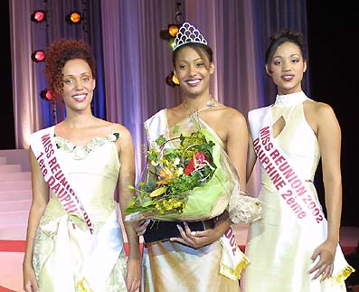

Finir l'année avec des jolies filles
2002
← Élections, piège à...
Partout des Gouzou →
Décembre est le mois de la floraison des flamboyants, du
Téléthon et des élections de miss. Les années se suivent et on
retrouve les mêmes sujets. Je suis vraiment désolé de reprendre les sujets accrocheurs de l'année
dernière. Je suis par contre heureux de reprendre l'animation de
ce site après quelques mois de silence, de parler de celles qui sont
parfois nos muses et nos motivations, les miss. Comme d'habitude,
plusieurs concours de beauté (voir Miss Supermotard 2002 avec Natacha Hoarau) attirent des candidates de
toute l'île et le journal télé de la Réunion a pris pour habitude
d'ouvrir ses pages (et aujourd'hui son site web) pour des
photos et articles au sujet de ces ambassadrices de la beauté
insulaire. En ce début de mois, c'est aussi les souvenirs qui
reviennent, la visite de Miss France 2002 qui cèdera bientôt sa place,
et un point de Raïssa Law-Wan, (miss Réunion 2001). Puis une
couverture complète de l'élection de Miss Réunion 2002, avec le tournage des séquences pour la finale, suivit de
la présentation des finalistes et enfin le portrait
de Stéphanie Tapé, la gagnante. la Miss Réunion 2002 qui
portera les couleur de l'île à l'élection de la fin de l'année. On lui
souhaite évidemment bonne chance pour la suite.
J'apprends à la dernière minute que miss France est
originaire d'un département d'outre mer, mais pas de la Réunion. On
peut donc souhaiter aussi bonne chance à Corinne Coman pour la suite.

Il est évident que j'ai choisit le sujet qui va m'amener le plus de visiteurs (masculins ?) pour relancer ce site inerte depuis trop longtemps. Alors vous qui découvrez cette page et qui vous demandez ce que ce que vient faire ce flamboyant en début d'article, découvrez les merveilles de la nature réunionnaise.
Apparament cette page a beaucoup de succès parce que les internautes aiment les photos des miss. Alors je vous propose quelques liens supplémentaires avec les photos des miss réunion depuis l'an 2000. En parlant de Miss Réunion 2000. Vous savez qu'elle s'appelle Élodie Suray et que cette dernière est aussi quatrième Dauphine de Miss France 2000. Et bien, il semblerait que certains la préferaient à Sonia Rolland, Miss France 2000 comme sur cette page perso oubliée avec la playmate de la semaine.